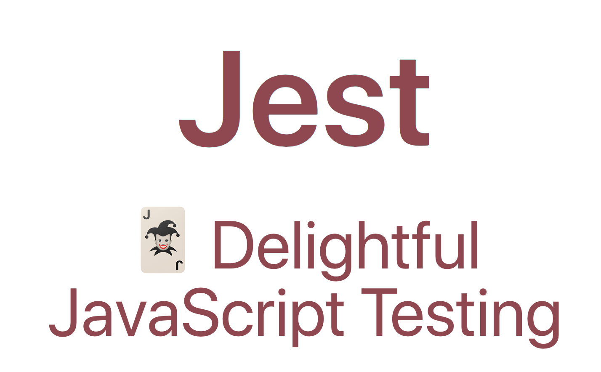
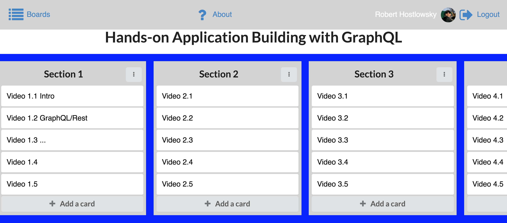
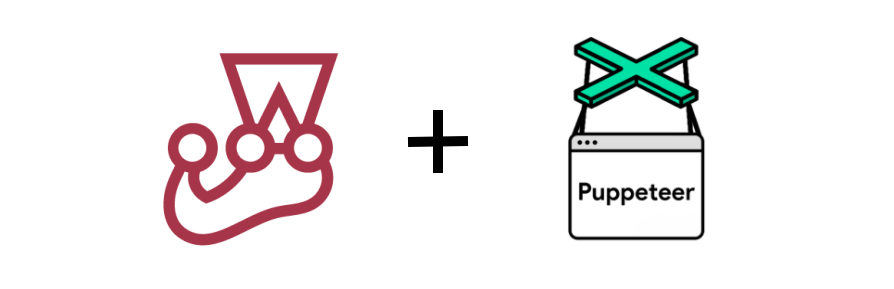

--- --- <p>layout: true</p> <h2 id="style.rightfloat-positionabsolute-right0style.footnoterobert-hostlowsky--modern-testing-in-js-world--agile-testing-meetup--2018"><br> .footnote[Robert Hostlowsky | Modern Testing in JS World | Agile Testing Meetup | 2018]</h2> <p>class: middle<br> .center[# Modern Testing in Javascript World<br> ]</p> <h2 id="background-image-urlimage.jpg-.footnotego-directly-to-project-sitehttpsgithub.comgnabremark--------"><!-- background-image: url(image.jpg) .footnote[Go directly to [project site](https://github.com/gnab/remark)] --></h2> <p>name: agenda</p> <h1 id="agenda">Agenda</h1> <p>Agile Testing @Munich - Meetup | Oct. 26, 2018 Munich</p> <ol> <li>Let’s talk about testing</li> <li>Unit testing with Jest</li> <li>End-to-end testing: a challenge</li> <li>Puppeteer</li> <li>Cypress</li> </ol> <h2 id="summary">Summary</h2> <p>class: center</p> <p>Robert Hostlowsky</p> <p>Consultant at codecentric AG, Germany, since 2020: working at instana</p> <p>web-dev-ops-qa-guy</p> <img src="assets/meInNY.jpg" width="60%"> <hr> <p>class: center</p> <h2 id="andrea-tomasini">Andrea Tomasini:</h2> <h2 id="agile-testing-is-nonsense">"Agile Testing is nonsense,</h2> <p>–<br> because Agile is about testing"<br> <a href="https://www.slideshare.net/tumma72/keynote-agile-testing">https://www.slideshare.net/tumma72/keynote-agile-testing</a></p> <blockquote> <p>“Testing is an attitude which brings us to trust results based on the fact that we can validate them.”</p> </blockquote> <hr> <p>class:<br> .center[<br> Two sides of the same medal, different <em>focus</em></p> <p><em>Ice-cone of testing</em>: user / <strong>business values</strong></p> <p><em>Testing-pyramid</em>: developer <strong>fast feedback + confidence</strong></p> <h2 id="img-srcassetsagiletesting-icecone.jpg-width60"><img src="assets/agiletesting-icecone.jpg" width="60%">]</h2> <p>class: middle</p> <h1 id="let’s-start-with-unit-tests">Let’s start with Unit tests</h1> <hr> <h2 id="class-middle.centerimg-srcassetsjest.png-width100-">class: middle<br> .center[]</h2> <h2 id="jest-a-modern-test-runner">Jest: A <em>modern</em> Test runner</h2> <ul> <li>Similar to Junit, phpunit, etc.</li> <li>Built by facebook</li> </ul> <p>–</p> <ul> <li>Based on <em>jasmine</em></li> </ul> <p>–</p> <ul> <li>Runs Tests <strong>in parallel</strong></li> </ul> <p>–</p> <ul> <li> <p>All usual <a href="https://jestjs.io/docs/en/using-matchers">matchers</a> we know from <em>chai</em> are already built-in<br> –</p> </li> <li> <p>Extensible: <a href="https://jestjs.io/docs/en/expect">Expect API</a></p> </li> </ul> <hr> <h1 id="why-jest">Why Jest?</h1> <h2 id="easy-setup-getting-started">Easy setup <a href="https://jestjs.io/docs/en/getting-started">Getting started</a></h2> <ul> <li>🔋🔋 All batteries included</li> <li>Install via <code>npm install -g -D jest</code></li> <li>Basic configuration file via <code>jest --init</code></li> <li>ES6 support with <code>babel-jest</code></li> <li>Typescript support with <code>ts-jest</code></li> <li>Same syntax as <em>Mocha</em> and <em>Chai</em>: BDD style like <em>Jasmine</em></li> </ul> <pre class=" language-js"><code class="prism language-js"><span class="token function">describe</span><span class="token punctuation">(</span><span class="token string">'Test Code with Jest'</span><span class="token punctuation">,</span> <span class="token punctuation">(</span><span class="token punctuation">)</span> <span class="token operator">=></span> <span class="token punctuation">{</span> <span class="token function">it</span><span class="token punctuation">(</span>'should have Test runner <span class="token function">expect</span><span class="token punctuation">(</span><span class="token string">"Jest based on Jasmine"</span><span class="token punctuation">)</span><span class="token punctuation">.</span><span class="token function">toContain</span><span class="token punctuation">(</span><span class="token string">'jasmine'</span><span class="token punctuation">)</span><span class="token punctuation">;</span> <span class="token punctuation">}</span><span class="token punctuation">)</span><span class="token punctuation">;</span> <span class="token punctuation">}</span><span class="token punctuation">)</span><span class="token punctuation">;</span> </code></pre> <hr> <p>class: middle</p> <h1 id="why-jest-1">Why Jest?</h1> <ul> <li>Great documentation</li> <li>Coverage Report built-in</li> <li>CI support with junit-reporter</li> <li>Each test has its own virtual environment</li> <li>Ide support: atom/webstorm/vscode …</li> </ul> <hr> <p>class: middle</p> <h1 id="how-jest-saves-time-watch">How Jest saves time? ⌚️</h1> <h2 id="watch-mode-🔎">watch-mode 🔎</h2> <ul> <li>only changed files, git based !</li> <li>module dependencies!</li> </ul> <h2 id="astonishing-clear-testerror-results">astonishing clear test/error results</h2> <h3 id="see-in-demo-tv">-> see in demo 📺</h3> <hr> <p>class: middle</p> <h2 id="asynchronous-code-✔">asynchronous code ✔</h2> <pre class=" language-js"><code class="prism language-js"><span class="token comment">// async/await can be used.</span> <span class="token function">it</span><span class="token punctuation">(</span><span class="token string">'works with async/await'</span><span class="token punctuation">,</span> <span class="token keyword">async</span> <span class="token punctuation">(</span><span class="token punctuation">)</span> <span class="token operator">=></span> <span class="token punctuation">{</span> expect<span class="token punctuation">.</span><span class="token function">assertions</span><span class="token punctuation">(</span><span class="token number">1</span><span class="token punctuation">)</span><span class="token punctuation">;</span> <span class="token keyword">const</span> data <span class="token operator">=</span> <span class="token keyword">await</span> user<span class="token punctuation">.</span><span class="token function">getUserName</span><span class="token punctuation">(</span><span class="token number">4</span><span class="token punctuation">)</span><span class="token punctuation">;</span> <span class="token function">expect</span><span class="token punctuation">(</span>data<span class="token punctuation">)</span><span class="token punctuation">.</span><span class="token function">toEqual</span><span class="token punctuation">(</span><span class="token string">'Mark'</span><span class="token punctuation">)</span><span class="token punctuation">;</span> <span class="token punctuation">}</span><span class="token punctuation">)</span><span class="token punctuation">;</span> </code></pre> <p>or</p> <pre class=" language-js"><code class="prism language-js"><span class="token function">it</span><span class="token punctuation">(</span><span class="token string">'works with promises'</span><span class="token punctuation">,</span> <span class="token punctuation">(</span><span class="token punctuation">)</span> <span class="token operator">=></span> <span class="token punctuation">{</span> <span class="token keyword">return</span> user<span class="token punctuation">.</span><span class="token function">getUserName</span><span class="token punctuation">(</span><span class="token number">4</span><span class="token punctuation">)</span> <span class="token punctuation">.</span><span class="token function">then</span><span class="token punctuation">(</span>data <span class="token operator">=></span> <span class="token function">expect</span><span class="token punctuation">(</span>data<span class="token punctuation">)</span> <span class="token punctuation">.</span><span class="token function">toEqual</span><span class="token punctuation">(</span><span class="token string">'Mark'</span><span class="token punctuation">)</span><span class="token punctuation">)</span><span class="token punctuation">;</span> <span class="token punctuation">}</span><span class="token punctuation">)</span><span class="token punctuation">;</span> </code></pre> <h2 id="httpsjestjs.iodocsenasynchronous"><a href="https://jestjs.io/docs/en/asynchronous">https://jestjs.io/docs/en/asynchronous</a></h2> <p>class: middle</p> <h2 id="mocking-built-in-✔">mocking: built-in ✔</h2> <p>[<a href="https://jestjs.io/docs/en/mock-functions">https://jestjs.io/docs/en/mock-functions</a>]</p> <hr> <p>class: middle</p> <h2 id="matchers-built-in-✔">matchers: built-in ✔</h2> <p>[<a href="https://jestjs.io/docs/en/expect">https://jestjs.io/docs/en/expect</a>]</p> <hr> <p>class: center,middle</p> <h1 id="camera-snapshot-testing">📷 Snapshot testing</h1> <hr> <h2 id="img-srcassetsjest-snapshots.png-width100"><img src="assets/jest-snapshots.png" width="100%"></h2> <p>class: middle</p> <h2 id="use-cases-for-snapshot-testing">Use cases for Snapshot testing</h2> <ul> <li>Replacing many asserts/equals</li> <li>UI component comparison</li> <li>GraphQL response</li> <li>…</li> </ul> <hr> <h1 id="what-if-only-having-unit-tests-...">What, if only having unit tests …?</h1> <hr> <h1 id="integration-testing">Integration Testing</h1> <h2 id="from-painless-react-testing-by-gleb-bahmutovvideo-width800-height400-controls-srcassetsbahmutov-unit_integration.mov-">(from “painless-react-testing†by <a href="https://slides.com/bahmutov/painless-react-testing#/1/3">Gleb Bahmutov</a>):<br> </h2> <p>class: center,middle</p> <h1 id="end-to-end-testing">End-to-end Testing</h1> <p>Full coverage with <strong>“the Testing trophy”</strong> by Kent C. Dodds:</p> <hr> <p>.right[<img src="assets/trophy-all.png" width="80%">]</p> <hr> <p>class: center</p> <h1 id="challenge-🏋️‍♀️">Challenge 🏋️‍♀️</h1> <h3 id="🤔-how-can-we-test-this-app">🤔 How can we test this app:</h3> <h2 id="img-srcassetscoolboard-screenshot.png-width80-"></h2> <hr> <h2 id="centerimg-srcassetspptr.png">.center[<img src="assets/pptr.png">]</h2> <p>class: middle</p> <h2 id="httpspptr.dev"><a href="https://pptr.dev">https://pptr.dev</a></h2> <blockquote> <p>Puppeteer is a Node library which provides a high-level API to control Chrome or Chromium over the DevTools Protocol.</p> </blockquote> <blockquote> <p>Puppeteer runs <strong>headless by default</strong></p> </blockquote> <pre class=" language-js"><code class="prism language-js"><span class="token keyword">const</span> puppeteer <span class="token operator">=</span> <span class="token function">require</span><span class="token punctuation">(</span><span class="token string">'puppeteer'</span><span class="token punctuation">)</span><span class="token punctuation">;</span> puppeteer<span class="token punctuation">.</span><span class="token function">launch</span><span class="token punctuation">(</span><span class="token punctuation">)</span><span class="token punctuation">.</span><span class="token function">then</span><span class="token punctuation">(</span><span class="token keyword">async</span> browser <span class="token operator">=></span> <span class="token punctuation">{</span> <span class="token keyword">const</span> page <span class="token operator">=</span> <span class="token keyword">await</span> browser<span class="token punctuation">.</span><span class="token function">newPage</span><span class="token punctuation">(</span><span class="token punctuation">)</span><span class="token punctuation">;</span> <span class="token keyword">await</span> page<span class="token punctuation">.</span><span class="token function">goto</span><span class="token punctuation">(</span><span class="token string">'https://google.com'</span><span class="token punctuation">)</span><span class="token punctuation">;</span> <span class="token keyword">const</span> inputElement <span class="token operator">=</span> <span class="token keyword">await</span> page<span class="token punctuation">.</span><span class="token function">$</span><span class="token punctuation">(</span><span class="token string">'input[type=submit]'</span><span class="token punctuation">)</span><span class="token punctuation">;</span> <span class="token keyword">await</span> inputElement<span class="token punctuation">.</span><span class="token function">click</span><span class="token punctuation">(</span><span class="token punctuation">)</span><span class="token punctuation">;</span> <span class="token comment">// ...</span> <span class="token punctuation">}</span><span class="token punctuation">)</span><span class="token punctuation">;</span> </code></pre> <p>[<a href="https://github.com/transitive-bullshit/awesome-puppeteer">https://github.com/transitive-bullshit/awesome-puppeteer</a>]</p> <hr> <p>class: middle,center</p> <h2 id="dream-team-jest--puppeteer-✨">Dream-team: Jest + puppeteer ✨</h2> <h2 id="img-srcassetsjestpuppeteer.png-width80-"></h2> <p>class: middle</p> <h3 id="jest-puppeteer"><a href="https://github.com/smooth-code/jest-puppeteer">jest-puppeteer</a></h3> <p>🎁 Extra: Automatically starts a server as part of test suite</p> <pre class=" language-json"><code class="prism language-json"><span class="token punctuation">{</span> <span class="token string">"preset"</span><span class="token punctuation">:</span> <span class="token string">"jest-puppeteer"</span> <span class="token punctuation">}</span><span class="token template-string"><span class="token string">``</span></span><span class="token template-string"><span class="token string">` `</span></span><span class="token template-string"><span class="token string">``</span></span> js <span class="token function">describe</span><span class="token punctuation">(</span><span class="token string">'Google'</span><span class="token punctuation">,</span> <span class="token punctuation">(</span><span class="token punctuation">)</span> <span class="token operator">=></span> <span class="token punctuation">{</span> <span class="token function">beforeAll</span><span class="token punctuation">(</span><span class="token keyword">async</span> <span class="token punctuation">(</span><span class="token punctuation">)</span> <span class="token operator">=></span> <span class="token punctuation">{</span> <span class="token keyword">await</span> page<span class="token punctuation">.</span><span class="token function">goto</span><span class="token punctuation">(</span><span class="token string">'https://google.com'</span><span class="token punctuation">)</span> <span class="token punctuation">}</span><span class="token punctuation">)</span> <span class="token function">it</span><span class="token punctuation">(</span><span class="token string">'should display "google" text on page'</span><span class="token punctuation">,</span> <span class="token keyword">async</span> <span class="token punctuation">(</span><span class="token punctuation">)</span> <span class="token operator">=></span> <span class="token punctuation">{</span> <span class="token keyword">await</span> <span class="token function">expect</span><span class="token punctuation">(</span>page<span class="token punctuation">)</span><span class="token punctuation">.</span><span class="token function">toMatch</span><span class="token punctuation">(</span><span class="token string">'google'</span><span class="token punctuation">)</span> <span class="token punctuation">}</span><span class="token punctuation">)</span> <span class="token punctuation">}</span><span class="token punctuation">)</span> </code></pre> <hr> <h3 id="more-extra-helpers">More extra helpers</h3> <pre class=" language-js"><code class="prism language-js"><span class="token comment">// Assert that a button containing text "Home" will be clicked</span> <span class="token keyword">await</span> <span class="token function">expect</span><span class="token punctuation">(</span>page<span class="token punctuation">)</span><span class="token punctuation">.</span><span class="token function">toClick</span><span class="token punctuation">(</span><span class="token string">'button'</span><span class="token punctuation">,</span> <span class="token punctuation">{</span> text<span class="token punctuation">:</span> <span class="token string">'Home'</span> <span class="token punctuation">}</span><span class="token punctuation">)</span> </code></pre> <pre class=" language-js"><code class="prism language-js"><span class="token comment">// Assert that current page contains 'Text in the page'</span> <span class="token keyword">await</span> <span class="token function">expect</span><span class="token punctuation">(</span>page<span class="token punctuation">)</span><span class="token punctuation">.</span><span class="token function">toMatch</span><span class="token punctuation">(</span><span class="token string">'Text in the page'</span><span class="token punctuation">)</span> </code></pre> <pre class=" language-js"><code class="prism language-js"><span class="token comment">// submit a form</span> <span class="token keyword">const</span> inputElement <span class="token operator">=</span> <span class="token keyword">await</span> page<span class="token punctuation">.</span><span class="token function">$</span><span class="token punctuation">(</span><span class="token string">'input[type=submit]'</span><span class="token punctuation">)</span><span class="token punctuation">;</span> <span class="token keyword">await</span> inputElement<span class="token punctuation">.</span><span class="token function">click</span><span class="token punctuation">(</span><span class="token punctuation">)</span><span class="token punctuation">;</span> </code></pre> <p>and more on<br> <a href="https://github.com/smooth-code/jest-puppeteer">https://github.com/smooth-code/jest-puppeteer</a></p> <hr> <p>class: middle.</p> <ul> <li>after 📹 recording manual steps via <strong>puppeteer recorder</strong> (a chrome extension),</li> <li>generated javascript code:</li> </ul> <pre class=" language-js"><code class="prism language-js"><span class="token keyword">const</span> puppeteer <span class="token operator">=</span> <span class="token function">require</span><span class="token punctuation">(</span><span class="token string">'puppeteer'</span><span class="token punctuation">)</span><span class="token punctuation">;</span> <span class="token punctuation">(</span><span class="token keyword">async</span> <span class="token punctuation">(</span><span class="token punctuation">)</span> <span class="token operator">=></span> <span class="token punctuation">{</span> <span class="token keyword">const</span> browser <span class="token operator">=</span> <span class="token keyword">await</span> puppeteer<span class="token punctuation">.</span><span class="token function">launch</span><span class="token punctuation">(</span><span class="token punctuation">{</span> devtools<span class="token punctuation">:</span> <span class="token boolean">false</span><span class="token punctuation">,</span> slowMo<span class="token punctuation">:</span> <span class="token number">0</span><span class="token punctuation">,</span> headless<span class="token punctuation">:</span> <span class="token boolean">false</span> <span class="token punctuation">}</span><span class="token punctuation">)</span> <span class="token keyword">const</span> page <span class="token operator">=</span> <span class="token keyword">await</span> browser<span class="token punctuation">.</span><span class="token function">newPage</span><span class="token punctuation">(</span><span class="token punctuation">)</span> <span class="token keyword">await</span> page<span class="token punctuation">.</span><span class="token function">goto</span><span class="token punctuation">(</span><span class="token string">'https://www.coolboard.fun/'</span><span class="token punctuation">)</span> <span class="token keyword">const</span> boards <span class="token operator">=</span> <span class="token string">'.sc-bdVaJa > .ui > .ui > p > a:nth-child(2)'</span><span class="token punctuation">;</span> <span class="token keyword">await</span> page<span class="token punctuation">.</span><span class="token function">waitForSelector</span><span class="token punctuation">(</span>boards<span class="token punctuation">)</span> <span class="token keyword">await</span> page<span class="token punctuation">.</span><span class="token function">click</span><span class="token punctuation">(</span>boards<span class="token punctuation">)</span> <span class="token keyword">await</span> page<span class="token punctuation">.</span><span class="token function">waitForSelector</span><span class="token punctuation">(</span><span class="token string">'.App > .sc-bdVaJa > .ui > p > a'</span><span class="token punctuation">)</span> <span class="token keyword">await</span> page<span class="token punctuation">.</span><span class="token function">click</span><span class="token punctuation">(</span><span class="token string">'.App > .sc-bdVaJa > .ui > p > a'</span><span class="token punctuation">)</span> <span class="token keyword">const</span> auth0LockInputEmail <span class="token operator">=</span> <span class="token string">'div > div > .auth0-lock-input-email > .auth0-lock-input-wrap > .auth0-lock-input'</span><span class="token punctuation">;</span> <span class="token keyword">await</span> page<span class="token punctuation">.</span><span class="token function">waitForSelector</span><span class="token punctuation">(</span>auth0LockInputEmail<span class="token punctuation">)</span> <span class="token keyword">await</span> page<span class="token punctuation">.</span><span class="token function">click</span><span class="token punctuation">(</span>auth0LockInputEmail<span class="token punctuation">)</span> <span class="token keyword">await</span> page<span class="token punctuation">.</span><span class="token function">type</span><span class="token punctuation">(</span>auth0LockInputEmail<span class="token punctuation">,</span> Email_Adress<span class="token punctuation">)</span> <span class="token keyword">let</span> auth0LockInputPassword <span class="token operator">=</span> <span class="token string">'div > div > .auth0-lock-input-password > .auth0-lock-input-wrap > .auth0-lock-input'</span><span class="token punctuation">;</span> <span class="token comment">// ...</span> </code></pre> <hr> <p>class: middle</p> <h3 id="learnings">Learnings:</h3> <pre><code>👠easy to start quickly 👠slow-motion mode helps to analyse 👠hard to maintain, because of "cryptic" _ selectors 👠one long test plan hard to debug </code></pre> <hr> <p>class: inverse,middle<br> <img src="assets/cypresslogo.png" width="100%"></p> <hr> <h1 id="cypress---what-is-it">Cypress - What is it?</h1> <p>A <strong>free</strong>, <strong>open source</strong>, <strong>locally</strong> installed Test Runner + <strong>Dashboard Service</strong> for recording your tests.</p> <p>Git: 1st commit <strong>Jun 5, 2014</strong></p> <p>Public beta: <strong>Oct 9, 2017</strong></p> <ul> <li>Test-Runner inside Chrome Browser or Electron-App</li> <li>Bundled with mocha, jquery, sinon, chai</li> <li>Controlling Chrome Browser via devtools</li> </ul> <hr> <h2 id="video-width800-height500-controls-srcassetscypress-installing-cli.mp4videocypress-setting-up"><br> <a href="https://docs.cypress.io/guides/overview/why-cypress.html#Setting-up-tests">cypress, Setting up</a></h2> <h2 id="video-width800-height500-controls-srchttpsdocs.cypress.ioimgsnippetswriting-tests.0b201bd1.mp4videocypress-writing-tests"><br> <a href="https://docs.cypress.io/guides/overview/why-cypress.html#Writing-tests">cypress, Writing tests</a></h2> <h2 id="video-width800-height500-controls-srchttpsdocs.cypress.ioimgsnippetsrunning-tests.4bae660a.mp4videocypress-running-tests"><br> <a href="https://docs.cypress.io/guides/overview/why-cypress.html#Running-tests">cypress, Running tests</a></h2> <p>class: middle</p> <h2 id="many-great-tutorials-videos-and-examples">Many great tutorials, videos, and examples:</h2> <p><a href="https://www.cypress.io/how-it-works/">https://www.cypress.io/how-it-works/</a></p> <p><a href="https://docs.cypress.io/examples/examples/recipes.html">https://docs.cypress.io/examples/examples/recipes.html</a></p> <hr> <p>class: middle</p> <h2 id="center-demo">.center[# Demo<br> ]</h2> <pre class=" language-js"><code class="prism language-js"><span class="token keyword">function</span> <span class="token function">gotoBoards</span> <span class="token punctuation">(</span><span class="token punctuation">)</span> <span class="token punctuation">{</span> <span class="token keyword">return</span> cy<span class="token punctuation">.</span><span class="token keyword">get</span><span class="token punctuation">(</span><span class="token string">'.sc-bdVaJa > .ui > .ui > p > a:nth-child(2)'</span><span class="token punctuation">)</span><span class="token punctuation">.</span><span class="token function">click</span><span class="token punctuation">(</span><span class="token punctuation">)</span> <span class="token punctuation">}</span> <span class="token keyword">function</span> <span class="token function">clickLogin</span><span class="token punctuation">(</span><span class="token punctuation">)</span> <span class="token punctuation">{</span> <span class="token keyword">return</span> cy<span class="token punctuation">.</span><span class="token keyword">get</span><span class="token punctuation">(</span><span class="token string">'.App > .sc-bdVaJa > .ui > p > a'</span><span class="token punctuation">)</span><span class="token punctuation">.</span><span class="token function">click</span><span class="token punctuation">(</span><span class="token punctuation">)</span><span class="token punctuation">;</span> <span class="token punctuation">}</span> <span class="token function">describe</span><span class="token punctuation">(</span><span class="token string">'Checkout cypress'</span><span class="token punctuation">,</span> <span class="token punctuation">(</span><span class="token punctuation">)</span> <span class="token operator">=></span> <span class="token punctuation">{</span> <span class="token function">it</span><span class="token punctuation">(</span><span class="token string">'tests coolboard'</span><span class="token punctuation">,</span> <span class="token punctuation">(</span><span class="token punctuation">)</span> <span class="token operator">=></span> <span class="token punctuation">{</span> cy<span class="token punctuation">.</span><span class="token function">visit</span><span class="token punctuation">(</span><span class="token string">'https://www.coolboard.fun/'</span><span class="token punctuation">)</span><span class="token punctuation">;</span> <span class="token function">gotoBoards</span><span class="token punctuation">(</span><span class="token punctuation">)</span><span class="token punctuation">;</span> <span class="token function">clickLogin</span><span class="token punctuation">(</span><span class="token punctuation">)</span><span class="token punctuation">;</span> cy<span class="token punctuation">.</span><span class="token keyword">get</span><span class="token punctuation">(</span>auth0LockInputEmail<span class="token punctuation">)</span><span class="token punctuation">.</span><span class="token function">type</span><span class="token punctuation">(</span><span class="token string">'MyEmail.com'</span><span class="token punctuation">)</span><span class="token punctuation">;</span> cy<span class="token punctuation">.</span><span class="token keyword">get</span><span class="token punctuation">(</span>auth0LockInputPassword<span class="token punctuation">)</span><span class="token punctuation">.</span><span class="token function">type</span><span class="token punctuation">(</span>password<span class="token punctuation">,</span> <span class="token punctuation">{</span>log<span class="token punctuation">:</span> <span class="token boolean">false</span><span class="token punctuation">}</span><span class="token punctuation">)</span><span class="token punctuation">;</span> cy<span class="token punctuation">.</span><span class="token keyword">get</span><span class="token punctuation">(</span><span class="token string">'#auth0-lock-container-1 form button'</span><span class="token punctuation">)</span> <span class="token punctuation">.</span><span class="token function">click</span><span class="token punctuation">(</span><span class="token punctuation">)</span> <span class="token punctuation">.</span><span class="token function">wait</span><span class="token punctuation">(</span><span class="token number">2000</span><span class="token punctuation">)</span><span class="token punctuation">;</span> <span class="token comment">// workaround for loading new data from server.</span> <span class="token function">gotoBoards</span><span class="token punctuation">(</span><span class="token punctuation">)</span><span class="token punctuation">;</span> <span class="token keyword">const</span> New_Board_button <span class="token operator">=</span> <span class="token string">'.App > .sc-bdVaJa .ui'</span><span class="token punctuation">;</span> cy<span class="token punctuation">.</span><span class="token keyword">get</span><span class="token punctuation">(</span>New_Board_button<span class="token punctuation">)</span><span class="token punctuation">.</span><span class="token function">click</span><span class="token punctuation">(</span><span class="token punctuation">)</span><span class="token punctuation">;</span> <span class="token comment">//...</span> <span class="token punctuation">}</span> <span class="token punctuation">}</span> </code></pre> <hr> <h2 id="video-width800-height500-controls-srcassetscoolboard-cypress-tests.movvideo"></h2> <p>class: middle</p> <h1 id="why-soo-coool-cool">Why soo coool 🆒?</h1> <ul> <li>Integration testing from user perspective</li> <li>Fast</li> <li>Easy: all stuff built-in</li> <li>Network XHR interception/mock/spy</li> <li>Parallel testing (easy scaling CI)</li> </ul> <hr> <p>class: middle</p> <h2 id="comparison-to-selenium">Comparison to Selenium:</h2> <ul> <li>Faster 🏃</li> <li>Autorun/rerun</li> <li>All in one place</li> <li>More stable, compared to wire protocol</li> </ul> <hr> <p>class: middle</p> <h2 id="some-limits">Some limits</h2> <ul> <li>Only javascript/typescript</li> <li>Limited jest support</li> </ul> <h2 id="see-cypress-page-about-trade-offs">See cypress page about <a href="https://docs.cypress.io/guides/references/trade-offs.html">trade-offs</a></h2> <p>class: middle</p> <h2 id="roadmap">Roadmap</h2> <ul> <li>🖥 Screen diffing</li> <li>Native events</li> <li>📱 mobile device support</li> </ul> <p>More on <a href="https://docs.cypress.io/guides/references/roadmap.html#Upcoming-Features">Upcoming-Features</a>:</p> <hr> <h2 id="cypress-summary">Cypress summary</h2> <p><strong>More control</strong> and <strong>better insights</strong> than with Jest/Puppeteer:</p> <p>In the protocol you can additionally see the XHR requests and even all navigation!<br> That has been a problem with Puppeteer, but was easy to detect!</p> <p>For even better experience:</p> <ul> <li>Have many tests,</li> <li>Test the log-in only once,</li> <li>Mock the REST api communication for speed-up</li> </ul> <hr> <p>class: middle</p> <h1 id="recommendation">Recommendation</h1> <p>Write unit tests with <strong>Jest</strong></p> <p>🎁 Best for Fast Feedback for development / TDD</p> <p>Have end-to-end tests with <strong>Cypress</strong></p> <p>🎁 Best for check meeting of the business needs</p> <pre><code>Cypress for the important (happy path) use cases Small number of additional *UI browser* tests for some edge cases on other browsers </code></pre>
loading...